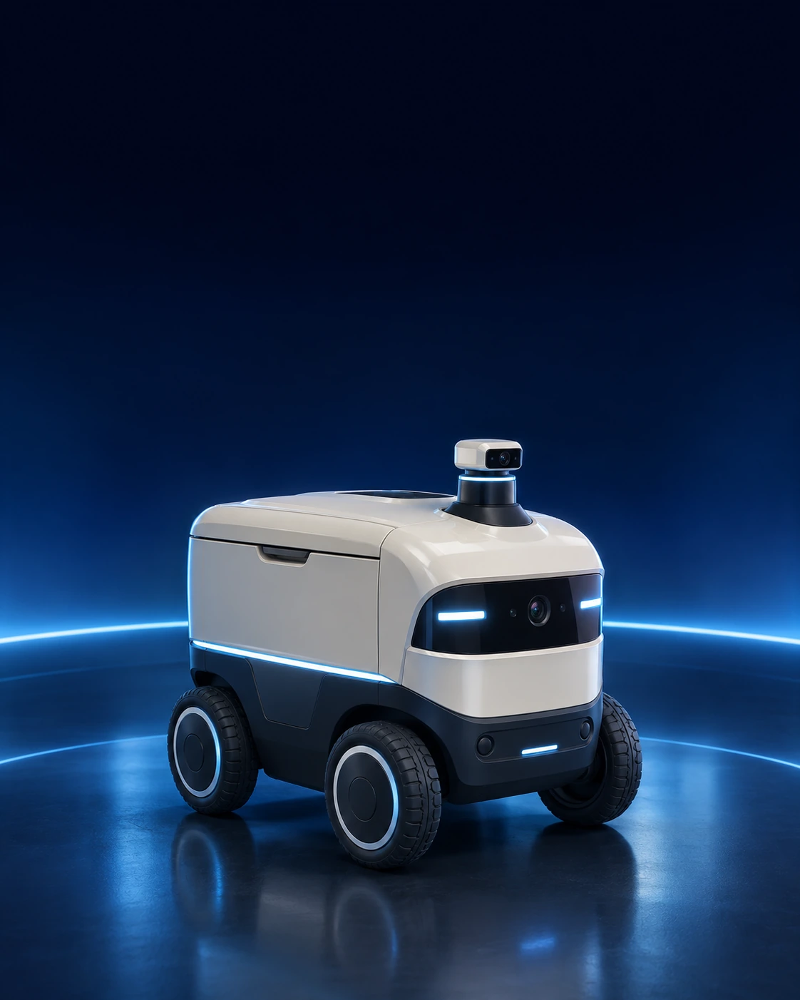

Kết nối trực tiếp
Dùng địa chỉ và thông tin đăng nhập của robot.
- Robot
- MentorPi
- Địa chỉ
- —
- Hoạt động
- Đang kiểm tra…
Dùng tài khoản ADMIN để truy cập hệ thống.

Kết nối thiết bị, chọn bản đồ và theo dõi trạng thái.
Bật robot rồi kết nối máy tính vào cùng mạng Wi-Fi.
Dùng địa chỉ và thông tin đăng nhập của robot.
Dùng Wi-Fi hiện tại nếu bạn chưa biết địa chỉ robot.
Chọn bản đồ có sẵn hoặc tạo bản đồ cho khu vực mới.
Đang kiểm tra…
Chưa có quy trình tạo bản đồ. Nhờ người quản lý thiết lập trước khi tiếp tục.
Chỉ kết thúc phiên cũ khi robot đã dừng và bạn muốn bắt đầu lại.
Thực hiện các bước này để chuyển robot sang mạng khác.
Đang kiểm tra Wi-Fi máy tính…
Sau đó vào , kết nối robot rồi quay lại đây.
Khi máy tính dùng Wi-Fi HW… của robot, hãy thử 192.168.149.1 nếu robot dùng địa chỉ mặc định.
Nhập mạng Wi-Fi mà robot và máy tính sẽ cùng sử dụng.
Chờ robot đổi mạng, kết nối lại máy tính rồi tìm robot.
Xem kết nối, cài đặt máy chủ và nhật ký kỹ thuật.
Chưa kết nối robot.
Chưa có dữ liệu.
Chọn nguồn và bấm Đọc nhật ký.
Chưa có thao tác.